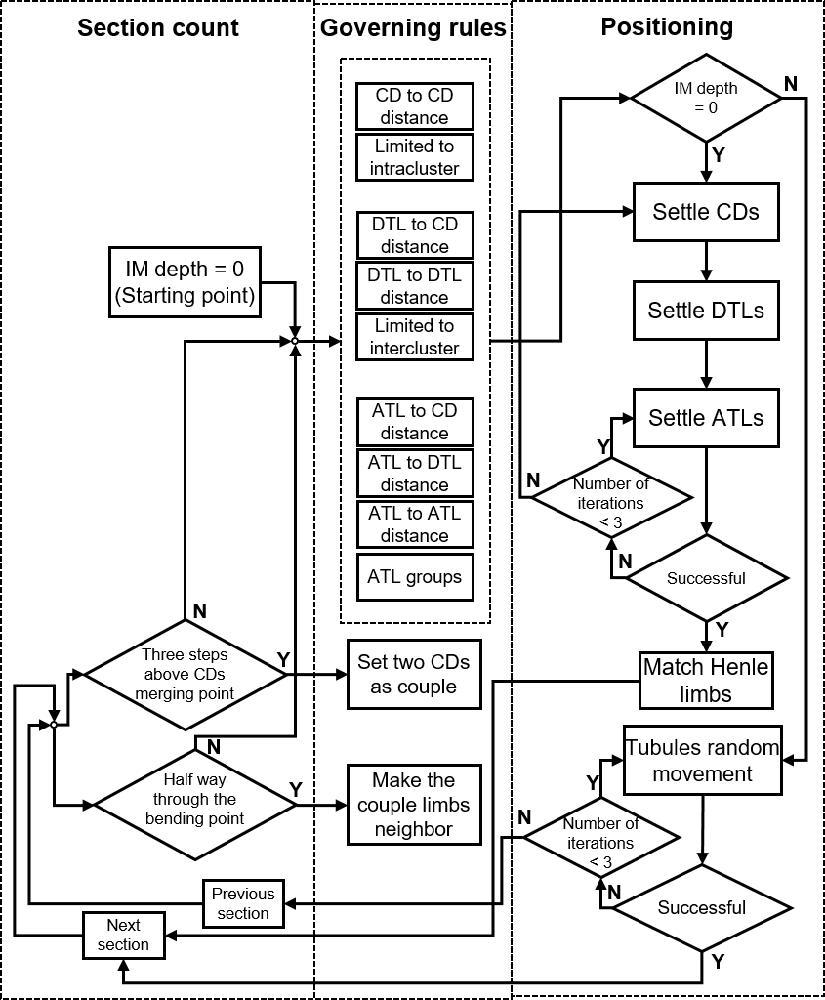

Species transport in rat kidney inner medulla

Three-dimensional modeling of IM predicted a noteworthy concentrating performance
by the Henle loops and CDs along the IM axis. Even though, one of the major
concentrating mechanisms in the outer medulla, the Na+ active transport, is not
significant in the IM, tubules characteristics including CDs' variable permeability
to urea and Na+, wide bends in the papillary region and other special topographical
properties have led to concentrated urine in the ducts of Bellini at the tip of the
papilla. In IM, CDs actively excrete Na+ into the interstitium. The concentrated
interstitium generates a high osmotic pressure which makes water diffuse out of the
duct of Bellini, and leave the urea with the concentration of ~1200 mM at the tip of the papilla.
The cumulative pattern in the CDs permeability to urea allows CDs to absorb urea along
the IM axis, with the exception of the region very close to the tip of the papilla.
Narrow bends cannot make the interstitium concentrated enough. Therefore, in the case
of ignoring wide bends, urea concentration declines at the tip of the papilla. On the
other hand, by including wide bends, that composes 50% of bend in the papillary, the
effect of Henle loops per micrometer of the IM axis increases. Subsequently, high Na+
gradient along the IM axis is produced, and make the region above the papilla more
concentrated with Na+. Consequently, more water diffuses out of CDs. Further large surface
area between the pre-bend segments and CDs intensifies the gradient between the CDs and
Henle loops' walls, and let more water flow out of the CDs.

In this study our focus was on introducing our three-dimensional method in IM
modeling by including detailed topographical information about the tubules and
using a sophisticated morphology for IM. Results such as concentration contours
in the interstitium showed that species distribution in the IM is significantly
dependent on the tubules position at each depth that implies the importance of
including the topographical information in the modeling. Moreover, in order to
assess the direct influence of wide bends, completely three-dimensional modeling
is required. Comparison of cases with and without wide bends, exhibited the
effect of this feature in the IM to be noticeable with respect to its presence
in a small fraction of IM, which once more confirm the necessity of completely
three-dimensional modeling.

Office:
Zuckerman Institute
3227 Broadway
Quad 6B
Contact:
ss6481@columbia.edu
sorooshsanatkhani@gmail.com
Advisors:
Dr. Vincent P. Ferrera
vpf3@columbia.edu
Dr. Sanjeev G. Shroff
sshroff@pitt.edu
Dr. Prahlad G. Menon
prm44@pitt.edu